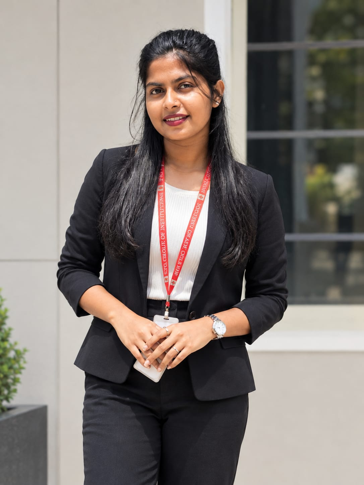

Frontend Development
Creating website layouts and interactive user interfaces.
BCA STUDENT · III YEAR
I'm a BCA student passionate about technology, web development, and creating useful digital experiences. I'm learning to turn ideas into responsive, user-friendly websites and applications.

GET TO KNOW ME
A little about my journey and what motivates me.
My name is Anusha G, and I am pursuing a Bachelor of Computer Applications at STG First Grade College, affiliated with Mandya University. I enjoy exploring how websites work and learning how to build useful applications.
My goal is to strengthen my programming fundamentals, gain practical development experience, and become a confident full-stack developer. I believe consistent practice and curiosity are important parts of becoming a good developer.
WHAT I'M LEARNING
Technologies and tools for my development journey.
Creating website layouts and interactive user interfaces.
Learning server-side programming and application logic.
Learning to store, organize, and retrieve application data.
Practicing coding, source control, and development workflows.
Edit this section to match the technologies you have actually studied and practiced.
MY WORK
A space to showcase academic work and development projects.
A responsive website presenting personal details, skills, education, projects, and contact information.
Discuss this project ↗Use this space to describe a real college assignment or application, its purpose, and the technologies used.
Ask me about my work ↗Replace sample project descriptions with completed projects. Do not claim unfinished projects as completed.
MY ACADEMIC JOURNEY
The foundation of my career in technology.
STG First Grade College · Mandya University
III Year
Studying computer applications and developing a foundation in programming, databases, and software development.
LET'S CONNECT
I'm interested in learning, collaborating, and exploring opportunities to grow as a developer.
Send Me an Email ↗